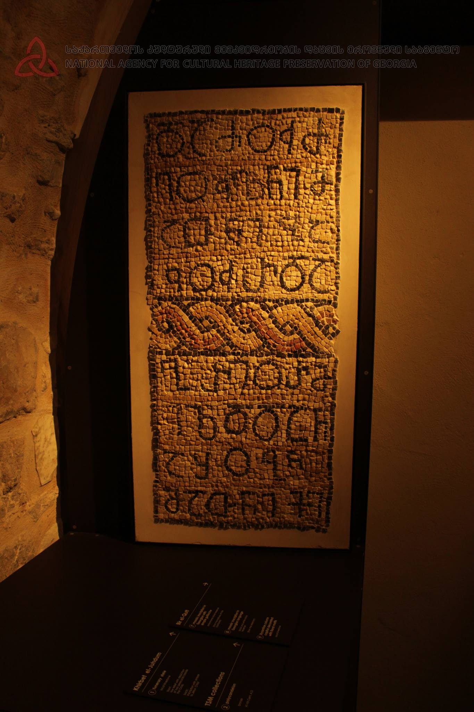

პალესტინის წარწერა IIPalestine inscription II
პალესტინის წარწერა II
Palestine inscription II
შინაარსი / Summary
მოსახსენებელი Memorial
კრიტიკული გამოცემა Interpretive Edition
და ძუძ -
ეულნი მ -
ათნი ბა -
კურ და
5გრიორმ -
იზდ და ნ
აშობნი
მათნი ქ(რისტ)ე
10
შ(ეიწყალ)ენ
ამენ
დიპლომატიური გამოცემა Diplomatic Edition
ႣႠ ႻႳႻ
ႤႳႪႬႨ Ⴋ
ႠႧႬႨ ႡႠ
ႩႳႰ ႣႠ
5ႢႰႨႭႰႫ
ႨႦႣ ႣႠ Ⴌ
ႠႸႭႡႬႨ
ႫႠႧႬႨ ႵႤ
10
ႸႤႬ
ႠႫႤႬ

პალესტინის წარწერა II
{'default': 'და ძუძეულნი მათნი: ბაკურ და გრიორმიზდ და ნაშობნი მათნი, ქრისტე, შეიწყალე, ამენ. And their vassals: Bakur and Griormizd and their children, Christ, have mercy on them. Amen.'}
{'default': 'წარწერის პირველი პუბლიკაცია ეკუთვნის მიხეილ თარხნიშვილს. მან პალეოგრაფიული ნიშნებით ეს წარწერა VI საუკუნით დაათარიღა.\n სიმონ ყაუხჩიშვილმა მიუთითა, რომ წარწერაში მოხსენიებული ბაკური პეტრე იბერის დედის მამის სახელი უნდა იყოს.\n გიორგი წერეთელმა განსაკუთრებული ყურადღება მიაქცია პალესტინის წარწერებს. იგი მიიჩნევდა, რომ\n წმიდა თეოდორეს სახელობის მონასტერი პეტრე იბერიელმა ააგო V საუკუნის 30-იან წლებში და მანვე შეამკო იგი ქართული წარწერებით, სადაც თვით მისი,\n მისი მამის და პაპის სახელებია მოხსენიებული. The inscription was first published by Mikheil Tarkhnishvili. He dated this inscription to the VI century according to the paleographic data. Simon Kaukhchishvili noted that the name Bakur from the inscription could be referring to the father of Peter the Iberian’s mother. Giorgi Tsereteli provided detailed analysis of the Palestine inscriptions and suggested that Peter the Iberian had built the St. Theodore Monastery in the 30s of the V century and embellished it with the Georgian inscriptions where he commemorates the names of himself, his father and his grandfather.'}
<div type="edition" xml:lang="ka" ana="mtavruli" xml:space="preserve">
<ab>
<lb n="1"/><w lemma="ქრისტე"><expan><abbr>ქ</abbr><ex>რისტ</ex><abbr>ე</abbr></expan></w>
<w lemma="განსუენება"><expan><abbr>გა</abbr><ex>ნ</ex><abbr>ო</abbr><ex>ჳ</ex><abbr>ს</abbr><ex>უ</ex><abbr>ენე</abbr></expan></w>
<w lemma="სულ">სოჳ<lb n="2" break="no"/>ლსა</w>
<name nymRef="ვაჩა">ვაჩაჲს<lb n="3" break="no"/>ასა</name>
<name nymRef="გურა"><expan><abbr>გო</abbr><ex>ჳ</ex><abbr>რაჲ<lb n="4" break="no"/>სასა</abbr></expan></name>
<name nymRef="მირა"><expan><abbr>მ</abbr><ex>ი</ex><abbr>რა</abbr><ex>ჲ</ex><abbr>ს</abbr><ex>ა</ex><abbr>ს</abbr><ex>ა</ex></expan></name>
</ab>
</div>